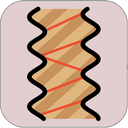

Overview
pyBasinSubs is a Python tool for 1-D and 2-D backstripping and decompaction basin analysis. Start with a well, stratigraphic column or interpreted section to explore subsidence, burial, thermal history, structural restoration and property modeling in the local browser app or Python notebooks. The method paper is Lai et al. (2022), Extremely rapid up-and-down motions of island arc crust during arc-continent collision, Communications Earth & Environment 3, 100.
The package combines 1-D Airy backstripping and decompaction with optional thermal views: a time-evolving column and geotherm, burial temperature, and kinetic Easy%Ro oil, wet-gas and dry-gas windows. The 2-D workflow provides flexural backstripping and decompaction, restoration comparisons, and an explicit fixed-trace growth-reconstruction prototype. Property modeling then records porosity, quartz cement, permeability and hydrostatic stress through time (Schneider / Lander–Walderhaug mechanical compaction, Walderhaug quartz cement, and published permeability relations) without changing the existing decompaction or restoration results.
The local browser app uses step-by-step workflows for inputs, compaction, calculation and export. Start it with pybasinsubs-app or its alias pybasinsubs-ui; pybasinsubs-tracer opens the fault editor directly. It runs locally, and input files stay on the user's computer. Python notebooks provide worked examples using the same calculation engines.
1-D basin history
2-D restoration and thermal history
Interpretation limits
Under active development: many functions, especially fault restoration, are experimental and not fully validated. Use geological constraints; a restored section is not a unique solution.
The fixed-trace growth prototype infers nonnegative, distributed apparent throw, not resolved down-dip slip, geological heave or curved-fault balancing. Zero is an assumed datum. The westernmost fault's footwall is flattened separately toward the datum and is not counted as throw. Traces remain user-controlled inputs. Growth reconstruction is an explicit step, not part of ordinary Run section.
Property modeling
Property modeling walks the existing 1-D geohistory or 2-D restoration through time and records porosity, quartz cement, permeability and stress. Mechanical compaction follows Schneider et al. (1996) / Lander & Walderhaug (1999). Quartz cement uses Walderhaug (1996) on sandstone. Sand permeability is Kozeny–Carman; mudstone permeability is Yang & Aplin (2010); chalk uses the Mortensen / Fabricius Kozeny form. Pore pressure is hydrostatic (Terzaghi). New porosities do not feed back into decompaction, isostasy or restoration.


Local browser workflows
Key features
1-D basin history
Airy backstripping and decompaction with erosion, over-compaction and Monte Carlo uncertainty, using bundled examples or a column CSV.
Thermal history and maturity
Column/geotherm and burial-temperature views with kinetic Easy%Ro maturity windows.
2-D restoration and growth
Flexural backstripping and decompaction, interpreted fault traces, and fixed-trace growth reconstruction with aligned apparent-throw and decompacted sedimentation rates.
Whole-section thermal timesteps
Isotherms and oil, wet-gas and dry-gas window overlays, with percent-in-window lines for remaining units through time. These are independent steady columns, not 2-D heat conduction.
Property modeling
Porosity, quartz cement, permeability and hydrostatic stress on the existing 1-D geohistory or 2-D restoration. New porosities do not change decompaction.
Installation
pip install pybasinsubsPython 3.12 or newer. Start the local browser app with pybasinsubs-app or pybasinsubs-ui; pybasinsubs-tracer opens the fault editor directly.
Citation
Lai, L.S.-H. (2026) pyBasinSubs (version 0.3.2). Zenodo. https://doi.org/10.5281/zenodo.24122693
All versions: https://doi.org/10.5281/zenodo.23832018 (concept DOI).
License: AGPL-3.0-or-later.

pyCoreRelator Bed-to-bed stratigraphic correlation of cores and physical logs, using dynamic time warping.